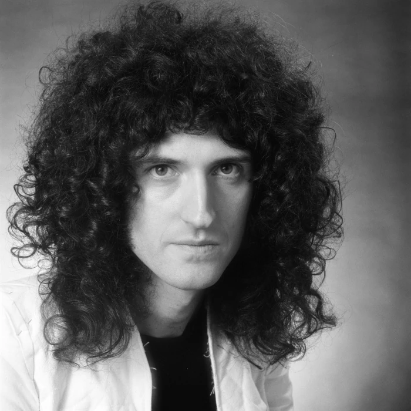
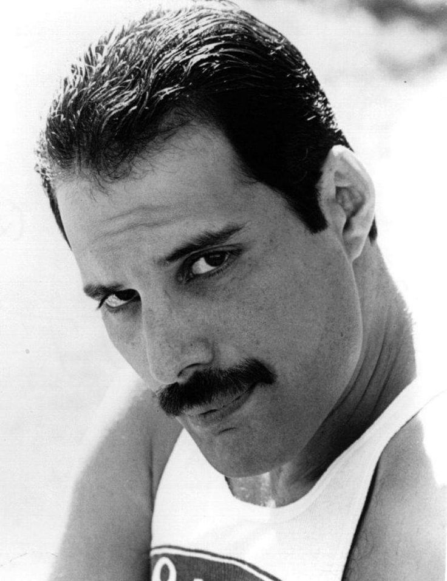
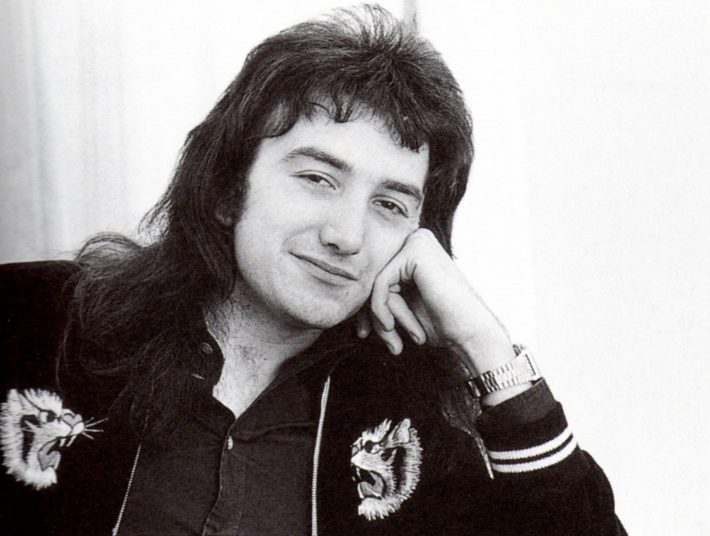
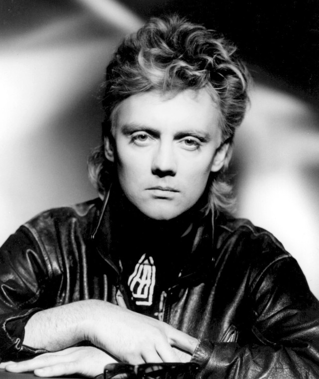

O Queen foi uma das bandas de rock mais inovadoras, influentes e marcantes da história da música mundial. Formado em Londres em 1970, o grupo britânico alcançou um sucesso gigantesco globalmente, vendendo centenas de milhões de discos e quebrando recordes de público em shows de estádio pelo mundo inteiro. O grande diferencial da banda estava em seu estilo musical altamente eclético, que desafiou as barreiras tradicionais do rock ao misturar uma base de hard rock e heavy metal com elementos grandiosos de ópera, música clássica, pop, funk e teatro.

Brian May é o guitarrista principal da banda Queen, sendo responsável por compor obras como "We Will Rock You", "The Show Must Go On", "Who Wants to Live Forever" e "I Want It All".

O astro Freddie Mercury foi o vocalista principal da banda Queen, compondo músicas mundialmente conhecidas como "We Will Rock You", "The Show Must Go On", "Who Wants to Live Forever" e "I Want It All".

John Deacon é o baixista da banda Queen, tendo composto músicas como "Another One Bites the Dust", "You're My Best Friend" e "I Want to Break Free".

Roger Taylor é o baterista da banda Queen, tendo composto músicas como "We Will Rock You", "The Show Must Go On" e "Who Wants to Live Forever".